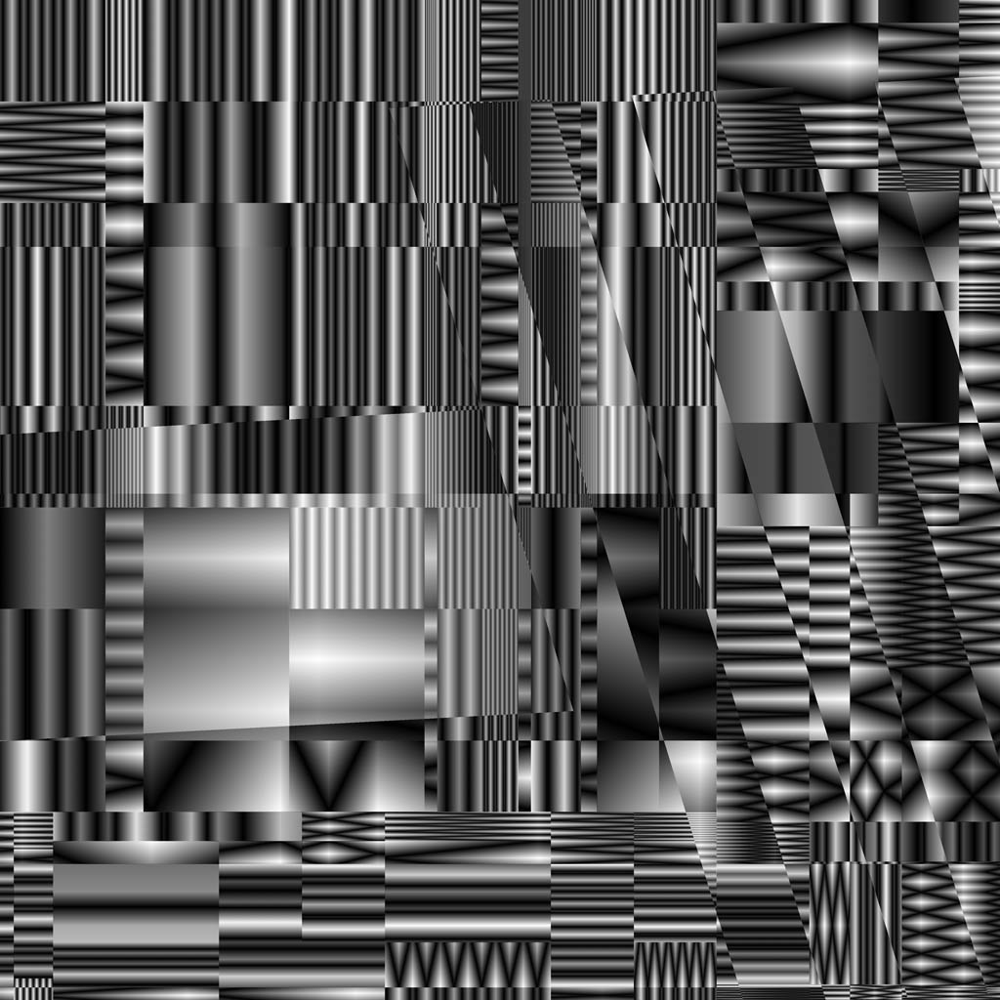

Logos
Primary marks for standard brand applications across print and digital.
Font
Archivo is the primary brand typeface, with a flexible range of weights and widths for both display and functional use.
Try the axes
Character set
Weight and width range
Alternate logos
Secondary marks and horizontal lockups for layouts where the primary marks aren’t the best fit.
Illustrations
Supporting artwork for adding character and visual detail across brand applications.
Motion
Motion assets for social, digital, projection, and other moving brand applications.
Visual Loom
A procedural tool for building textures and forms through the mathematical layering and weaving of simple graphic elements.
Every output begins with a single black-and-white gradient, subdivided and layered through a fixed procedural system. Generate a complete composition with Random Look, then refine individual layers with the controls or directly on the canvas. Export the results as SVG or PNG for use across print, digital, social, and other brand applications.
